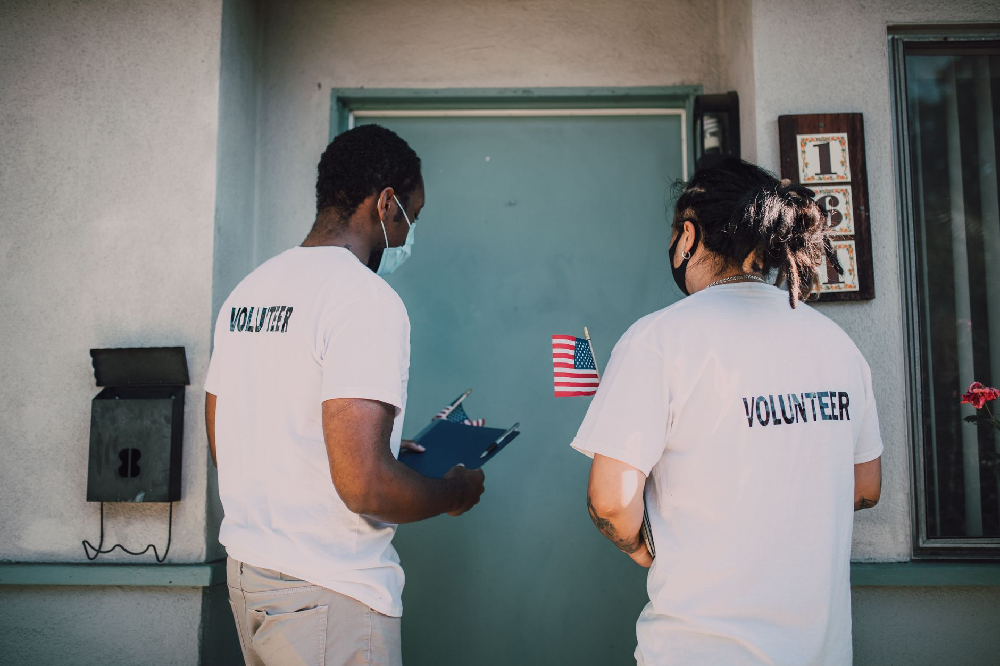

Baptize
Matthew 28:19
Full-immersion baptism in water, marking a believer's covenant with the risen Christ.
AFRICAN THE APOSTOLIC
Kuruman · Northern Cape
Free from the bondage of sin, united by the power of the Holy Spirit, and living fully in the Kingdom of God.
John 8:36 · Romans 8:2
The vision
We are an ordinary people who have met an extraordinary God. Under the leadership of Pastor Makgothu Morapedi, African The Apostolic Church in Zion in SA exists to see lives filled with hope — in Kuruman and across the community.
We long to see a generation walk free — free from sin, free from fear, free from every yoke that hinders the fullness of Christ. United by the power of the Holy Spirit, we live as citizens of the Kingdom of God: worshipping in truth, serving in love, and carrying the light of Christ into every corner of South Africa.
Our mission
To baptize believers through full immersion in water, and to build Spirit-filled church communities that deliver healing, holiness, and hope across South Africa and beyond.
Matthew 28:19–20
Three pillars
Matthew 28:19
Full-immersion baptism in water, marking a believer's covenant with the risen Christ.
Acts 1:8
Spirit-filled worship, prayer and teaching that equips saints for the work of the Kingdom.
Romans 12:2
Healing, holiness and hope carried into homes, communities and nations.
Faith in Christ · Power of the Spirit · Kingdom impact
John 8:36 · Romans 8:2
“So if the Son sets you free, you will be free indeed.”
Life at African The Apostolic

Come and worship
Join us this Sunday for worship, the Word, and the fellowship of the saints. Whether you are seeking, returning, or already walking with Christ — there is a place for you here.
◆
Kuruman, Northern Cape.
Tap the map for directions — we'll be watching for you.
Get involved
The engine room. We stand in the gap for our town.
Voices and instruments lifted with everything we have.
The next generation, discipled and unashamed.
Faith with feet — feeding, visiting, loving Kuruman.
This Sunday
Your questions, your doubts, your family, your hope. There's room in this family for all of it — and for you.
Give
Every gift keeps the doors open and the outreach moving. Thank you for sowing into what God is doing in Kuruman.